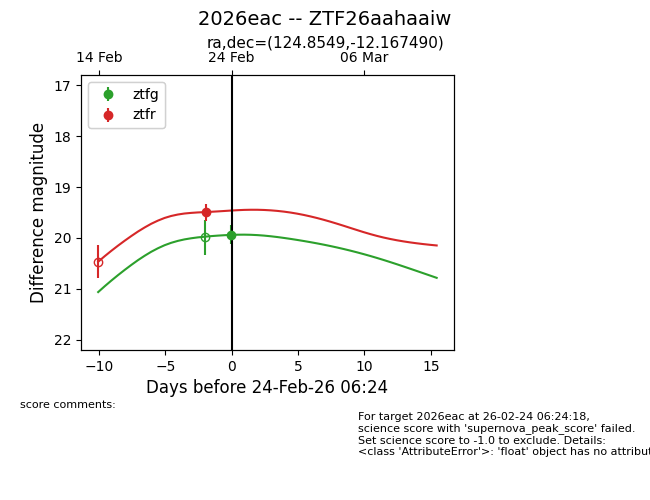
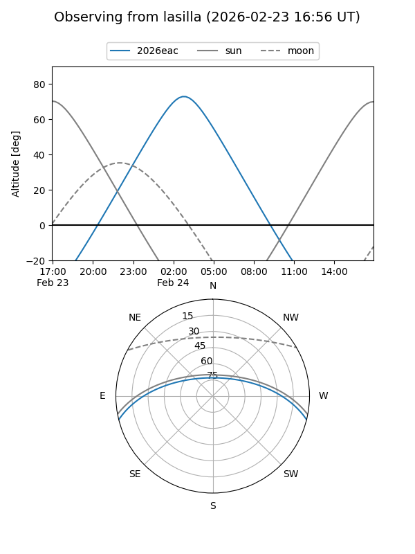
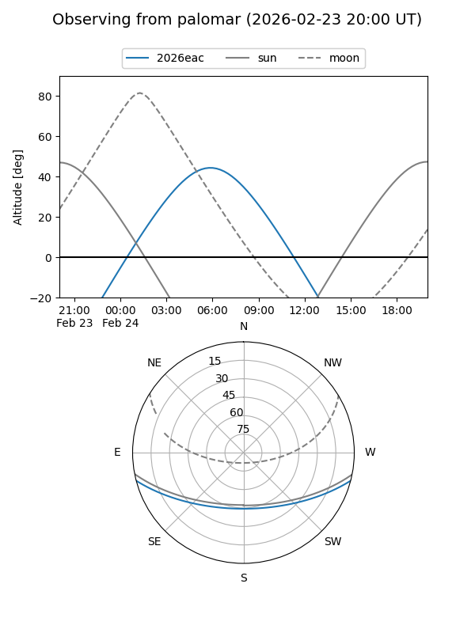

2026eac
Target 2026eac at 2026-02-24 09:08
Aliases and brokers:
FINK: link
Lasair: link
ALeRCE: link
TNS: link
YSE: link
alt names
ZTF26aahaaiw (ztf,fink_ztf)
2026eac (tns,yse)
Coordinates:
equatorial (ra, dec) = 124.8549,-12.16749
equatorial (HMS+DMS) = 08:19:25.19,-12:10:02.96
galactic (l, b) = (234.2946,+13.28143)
Flags:
Photometry:
last ztfg=19.93, ztfr=19.49
1 ztfg, 1 ztfr detections
Lightcurve

Visibility


Additional plots